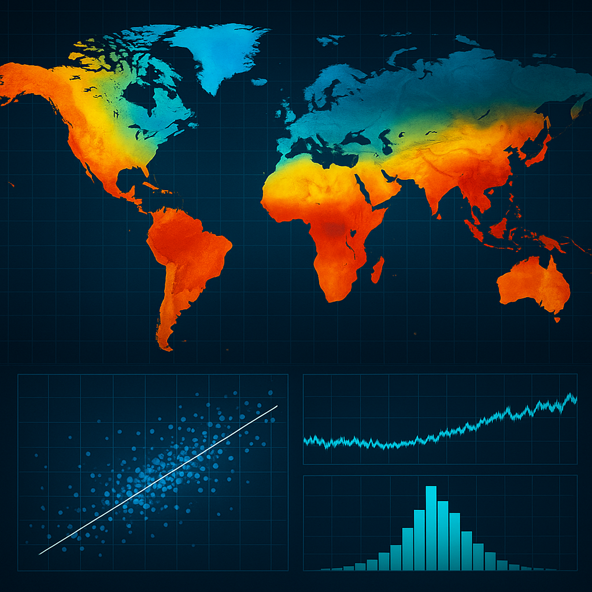

Consulting work delivered in support of Bahitek SRL applying mathematical modelling, uncertainty quantification, and environmental analytics to real-world data challenges.
Monte Carlo Uncertainty Propagation
Application of Monte Carlo techniques to propagate uncertainty in the knowledge of physical variables such as …, within a circuit at the … plant. The goal was to quantify the joint final uncertainty in the output variables ….
For implementation, we worked on the interface between MATLAB and … to automate the generation of individual flow scenarios and perform a sensitivity analysis.
Meteorological Data Processing for Flare Dispersion
Data cleaning and quality control of meteorological time series, handling missing values and completion strategies to support pollutant dispersion analysis in flares. Work based on SMN meteorological stations and implemented with MATLAB, Python, and Julia. In support of companies XX, XX, and XX.
Statistical Analysis of Operational Data
Statistical analyses including percentile calculations (e.g., temperature), event frequency analysis, and correlation tests between variables. Determination of relationships between temperature increases together with high humidity values (latent heat dissipation constraints) and association with preferential wind directions for the Aluar plant (Puerto Madryn).
